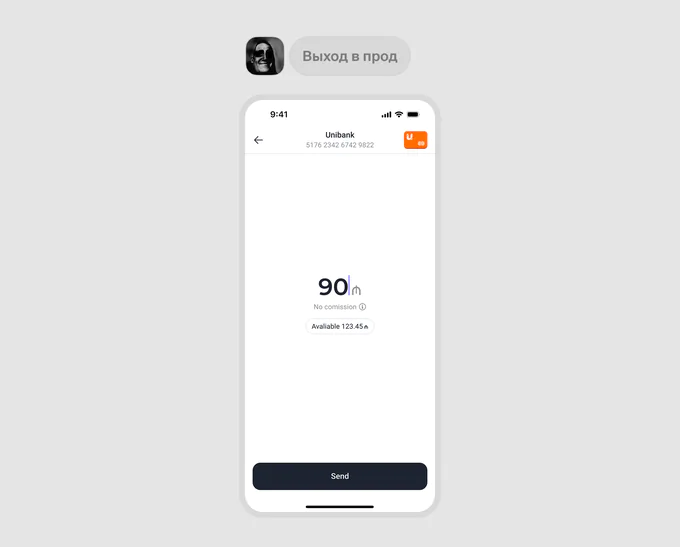
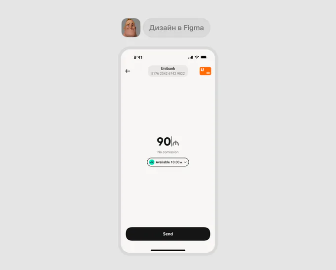

Развитие дизайн‑системы m10
Я присоединилась к команде m10 во время перехода на новую дизайн-систему. Новую во всех смыслах: новая библиотека в  Figma, обновлённые компоненты, токены и правила, которые должны были привести интерфейсы к единому стилю бренда.
Figma, обновлённые компоненты, токены и правила, которые должны были привести интерфейсы к единому стилю бренда.
Переход ещё не завершился. Дизайнеры работали сразу с двумя библиотеками — старой и новой, смешивали компоненты и часто делали  detach, если не хватало нужных настроек. У фронтенда тоже одновременно существовали старые и новые компоненты, но не всегда было понятно, что уже реализовано в коде, а что ещё нет.
detach, если не хватало нужных настроек. У фронтенда тоже одновременно существовали старые и новые компоненты, но не всегда было понятно, что уже реализовано в коде, а что ещё нет.


Моя роль
Я взяла на себя дальнейшее развитие DS параллельно с продуктовыми задачами. Цель была не просто дополнить библиотеку, а сделать так, чтобы команда могла полностью перейти на неё в Figma, а разработка постепенно подтягивала новый UI в приложение.
01 / Аудит дизайн-системы
Первым делом я провела аудит  старой и новой библиотек, посмотрела UI приложения и собрала запросы дизайнеров. Нужно было понять, каких компонентов не хватает, какие стоит перенести или обновить и что мешает использовать уже существующие без detach.
старой и новой библиотек, посмотрела UI приложения и собрала запросы дизайнеров. Нужно было понять, каких компонентов не хватает, какие стоит перенести или обновить и что мешает использовать уже существующие без detach.
Отдельно встретилась с фронтендом  , чтобы сверить библиотеку Figma с кодом. Выяснилось, что часть новых компонентов уже была в общем UI kit, часть использовалась в продукте, но ещё не попала в библиотеку разработчиков, а остальные ждали реализации.
, чтобы сверить библиотеку Figma с кодом. Выяснилось, что часть новых компонентов уже была в общем UI kit, часть использовалась в продукте, но ещё не попала в библиотеку разработчиков, а остальные ждали реализации.

После аудита я собрала бэклог и организовала статусы прямо в Figma:
- Готово в дизайне и коде
- Готово в дизайне, ждёт разработки
- В работе у дизайнеров

Теперь по библиотеке можно было понять не только какие компоненты существуют, но и на каком этапе они находятся.
Заодно я почистила  структуру файла и ввела базовые правила его организации. Без большой документации — на этом этапе важнее было сделать библиотеку понятной и удобной в ежедневной работе.
структуру файла и ввела базовые правила его организации. Без большой документации — на этом этапе важнее было сделать библиотеку понятной и удобной в ежедневной работе.

Мы договорились собирать новые флоу только на новой DS. По мере доработки компонентов необходимость возвращаться к старой библиотеке исчезла, и команда полностью от неё отказалась.
02 / Ох уж этот detach
Одна из самых частых проблем, которую отмечали дизайнеры, —  detach. Иногда компонент существовал, но его нельзя было настроить под нужную задачу. Приходилось отвязывать его от библиотеки, а вместе с этим терять будущие обновления.
detach. Иногда компонент существовал, но его нельзя было настроить под нужную задачу. Приходилось отвязывать его от библиотеки, а вместе с этим терять будущие обновления.

По итогам аудита я добавляла недостающие компоненты, варианты и стейты. Но не менее важно было пересмотреть структуру тех, которыми команда уже пользовалась каждый день.
После появления слотов  в Figma я начала пробовать их в компонентах, где часто приходилось делать detach. При этом было важно не превращать каждый элемент в конструктор без правил.
в Figma я начала пробовать их в компонентах, где часто приходилось делать detach. При этом было важно не превращать каждый элемент в конструктор без правил.
Хороший пример — ячейки списков. Раньше для нестандартного логотипа провайдера или действия справа приходилось отвязывать ячейку от библиотеки  . Со слотами можно заменить нужную часть, не затрагивая остальную структуру.
. Со слотами можно заменить нужную часть, не затрагивая остальную структуру.

Похожим образом я доработала bottom sheet: его содержимое можно менять под конкретный сценарий, сохраняя основу компонента.
Так мы получили больше гибкости без необходимости каждый раз собирать собственную версию элемента.

03 / Если экран повторяется, ему тоже нужен шаблон
Проблема консистентности касалась не только отдельных компонентов.
Например, в приложении существовало несколько визуально разных версий одного и того же экрана  ошибки. Каждый дизайнер собирал его заново: где-то менялись отступы, где-то положение иллюстрации, где-то композиция целиком.
ошибки. Каждый дизайнер собирал его заново: где-то менялись отступы, где-то положение иллюстрации, где-то композиция целиком.
Мы стали добавлять в библиотеку шаблоны повторяющихся страниц. В первую очередь — ошибки и empty states.
Такие страницы завели как компоненты. Через слоты можно менять иллюстрации и контент, а композиция остаётся общей  для всех флоу.
для всех флоу.

По похожей причине мы сделали компонентом и главную страницу приложения. Она часто встречается в продуктовых флоу как точка входа, поэтому удобнее обновлять её в одном месте, чем поддерживать десятки отдельных копий.
Это оказалось ещё одним способом уменьшить расхождения в макетах, не вводя дополнительные правила, которые каждый должен помнить.
04 / Figma → Development
Навести порядок в дизайн-библиотеке было только половиной задачи. Компоненты должны быть доступны и разработчикам  , иначе переход на новый UI будет постоянно тормозить.
, иначе переход на новый UI будет постоянно тормозить.
Мы возобновили синки  с фронтендом раз в две недели. Сверяли прогресс, обсуждали приоритеты и решали, какие компоненты можно взять в работу следующими.
с фронтендом раз в две недели. Сверяли прогресс, обсуждали приоритеты и решали, какие компоненты можно взять в работу следующими.

Я также собрала задачи по DS в Jira  , чтобы у команды был общий бэклог и прозрачные статусы реализации.
, чтобы у команды был общий бэклог и прозрачные статусы реализации.
Параллельно стали актуализировать веб-версию UI kit, где разработчики могут посмотреть доступные компоненты и проверить их поведение.
Отдельное внимание уделили дизайн-ревью  . Сам процесс существовал и раньше, но небольшие компоненты иногда пропускали: казалось, что в простой кнопке или иконке нечего проверять.
. Сам процесс существовал и раньше, но небольшие компоненты иногда пропускали: казалось, что в простой кнопке или иконке нечего проверять.

На практике именно в таких деталях появлялись расхождения с макетами — размеры текста  , отступы, обводки, выравнивание. Мы договорились проводить дизайн-ревью перед мержем каждого нового компонента, чтобы исправлять ошибки до релиза, а не после.
, отступы, обводки, выравнивание. Мы договорились проводить дизайн-ревью перед мержем каждого нового компонента, чтобы исправлять ошибки до релиза, а не после.
05 / Ресурсов никогда не хватает
Даже когда компоненты готовы и в Figma, и в коде, это не значит, что весь продукт сразу переходит на новый UI  .
.
У команды не было ресурсов отдельно переделывать все существующие экраны. Поэтому мы продолжили постепенный переход: при работе над продуктовой задачей разработчики по возможности обновляют и связанные с ней элементы интерфейса.


Здесь помогает готовый UI kit  . Вместо того чтобы каждый раз заново реализовывать обновлённый компонент, его можно взять из общей библиотеки.
. Вместо того чтобы каждый раз заново реализовывать обновлённый компонент, его можно взять из общей библиотеки.
Так новая DS постепенно попадает в приложение без отдельного большого проекта по миграции.
Результат
Дизайн-команда полностью перешла на новую библиотеку. Она покрывает основные рабочие сценарии, а компоненты  стали гибче благодаря новым вариантам, стейтам и слотам.
стали гибче благодаря новым вариантам, стейтам и слотам.
В продуктовых флоу стало меньше detach. Шаблоны повторяющихся страниц помогли убрать визуальные расхождения между одинаковыми состояниями.

Примерно 90% компонентов из Figma уже доступны в общем UI kit разработчиков. Это не означает, что весь интерфейс приложения обновлён: переход на новый UI в проде продолжается.
У обеих команд теперь есть понятные статусы готовности, общий бэклог  и регулярный процесс
и регулярный процесс  синхронизации. А дизайн-ревью помогает не переносить мелкие визуальные ошибки в прод.
синхронизации. А дизайн-ревью помогает не переносить мелкие визуальные ошибки в прод.
Заключение
Дизайн-система всё ещё развивается. Нам предстоит расширять документацию и продолжать обновление приложения. Но теперь это рабочая система, на которую команда может опираться, а не ещё одно место, где постоянно приходится разбираться, что готово, что использовать и где искать нужный компонент.